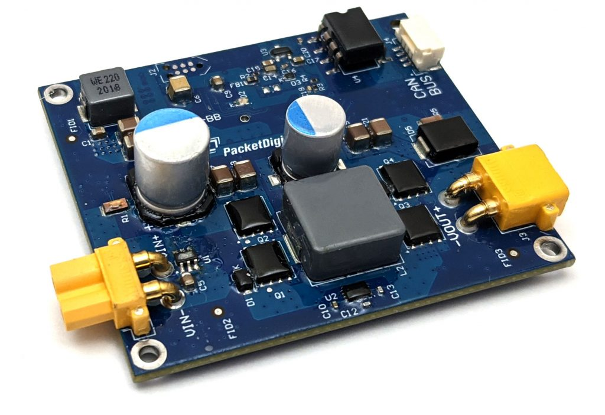
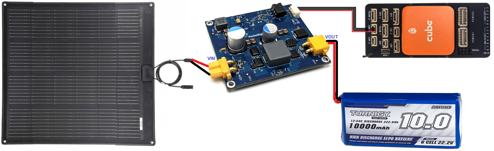

Packet Digital MPPT¶
{kind=link}
The Packet Digital MPPT solar controller is specifically designed to help extend the range of unmanned vehicles through the use of solar panels. This light weight controller includes a DroneCAN/DroneCAN interface allowing real-time monitoring of the solar system’s performance.
Normally, a conventional, bi-directional power monitor would also be included in this system directly on the battery’s output to monitor the battery’s current flow, either charging or discharging, and total consumed current of the battery.
Where to Buy¶
Contact PacketDigital directly for pricing
Specifications¶
Input Voltage: 12.5V to 50V
Output Voltage: Up to 50V
Input/Output Current Max: 5A
Size: 60.96mm x 53.34mm x 17.4mm (LxWxH)
Weight: 31g
For more details please see packetdigital.com
Autopilot Connection¶
{kind=link}
Connect the solar panel, MPPT, battery and autopilot as shown above.
Once the solar panel provides more than 12V the board’s LED should flash green. Initially it may be easiest to connect a 4S or 6S battery to the board’s VIN port.
配置¶
Connect a ground station (e.g. Mission Planner) to the autopilot and set the following parameters and then reboot the autopilot
BATT_MONITOR = 8 (DroneCAN)
CAN_P1_DRIVER = 1 (DroneCAN)
BATT_OPTIONS provides several options for MPPT enable and disable depending on autopilot events.
Note
the MPPT can be manually turned on or off using an RC channel switch setup with its RCx_OPTION = 172.
Check the MPPT board’s parameters by connecting through “SLCAN”
Open Mission Planner’s SETUP >> Optional Hardware >> UAVCAN(DroneCAN) page
From the top right, select the COM port for the autopilot’s SLCAN connection (normally one higher than the MAVLink COM port)
Press the “SLCan Mode CAN1” button. The table should be filled in as shown below. If this does not work try changing to the Config screen, connect over MAVLink and set CAN_SLCAN_CPORT = 1. Return to SETUP >> Optional Hardware >> UAVCAN(DroneCAN) page and press the “SLCan Mode CAN1” button again
{kind=link}
Press the “Menu” button to view or change some of the MPPT’s settings
mppt.vout_set configures the maximum voltage from the VOUT pin. This should be equal to the battery’s voltage when fully charged.
mppt.dcdc_en configures the board’s startup behaviour. If “0” the MPPT will not charge the battery until the autopilot is armed. If “1” the MPPT will always attempt to charge the battery
uavcan.node_id should normally be left at “0” to allow the autopilot to dynamically allocate the MPPT’s DroneCAN node id but if multiple DroneCAN battery monitors or MPPTs are used you can manually set this to some value between 0 and 127 (e.g. “50”) and then set BATT_SERIAL_NUM to the same number
Connecting more than one MPPT¶
More than one Packet Digital MPPT board can be connected in parallel to the same battery (but different solar panels) to increase the total current provided.
To allow the autopilot to connect to all the MPPTs:
Enable one battery monitor per MPPT by setting BATTx_MONITOR = 8
Use Mission Planner’s SETUP >> Optional Hardware >> UAVCAN(DroneCAN) page’s “Menu” button to manually configure the uavcan.node_id of each MPPT
set BATTx_SERIAL_NUM to match the uavcan.node_ids set above.
You can sum all the MPPT currents using a “SUM (10)” power monitor type. See Power Monitor/Module Configuration in Mission Planner.